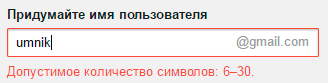
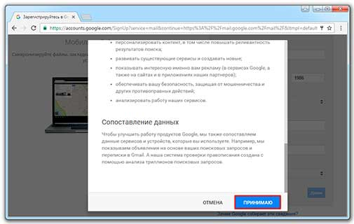

Как создать электронную почту Gmail
Gmail.com (джимеил или гмайл) – это крупнейший в мире сайт электронной почты. Принадлежит он поисковику Google и здесь можно бесплатно создать ящик, а также вместе с ним получить Гугл аккаунт. А, значит, и Диск, YouTube, Google Play, доступ к другим сервисам.
1. Открываем сайт gmail.com. Нажимаем на «Создать аккаунт» внизу.

2. Заполняем форму с правой стороны.
Имя и фамилия. Здесь нужно указать свои данные, желательно настоящие. Ведь если вдруг у вас в будущем возникнут сложности со входом в ящик, то благодаря этой информации можно будет вернуть доступ. При желании эти данные потом можно будет скрыть.
Имя пользователя. Очень важное поле – это и будет название вашего ящика (логин). Оно должно состоять только из английских букв, также можно использовать цифры и точки. Его нужно просто придумать и напечатать.
Это и есть адрес электронной почты (e-mail), куда будут поступать письма. Именно его и нужно будет сказать человеку, чтобы он смог вам что-нибудь прислать.
С выбором имени пользователя могут возникнуть проблемы. Дело в том, что каждый такой логин уникален – он принадлежит только одному человеку. И очень многие названия уже зарегистрированы, а, значит, выбрать их нельзя.
Допустим, я хочу получить логин "umnik". Печатаю его в поле и нажимаю кнопку Enter на клавиатуре. Система такое имя не разрешает – говорит, слишком короткое.
Ладно, значит, дописываю еще пару букв и нажимаю Enter. Но Гуглу опять не нравится: оказывается, такое имя уже кем-то занято.
Чуть ниже система показывает логины, которые свободны для регистрации. Гугл их автоматически сложил из моего имени и фамилии, а также добавил что-то похожее на придуманное мною.
Можно выбрать любое из них. Но я советую еще немного потрудиться и подобрать что-то лучше – короче и проще для запоминания. Дело в том, что это название сменить уже будет нельзя.
Конечно, можно потом зарегистрировать другой ящик, настроить переадресацию писем на него из старого адреса. Но зачем такие сложности, если можно сразу выбрать нормальное название.
Чтобы упростить задачу, после ввода желаемого логина нажимайте на кнопку Enter и смотрите, что предлагает система. Она будет показывать разные свободные названия после каждого нажатия. Может, что-то и подойдет.
Если имя свободно для регистрации, то после нажатия на Enter, поле для его ввода не будет подсвечено красным.
Многие сначала не понимают, как важно иметь хороший адрес. Конечно, если почта нужна не для переписки, а для чего-то другого (регистрации в Google Play, например), то подойдет любое название. Но если вы планируете получать на нее письма, то адрес очень и очень важен.
В идеале он должен быть простым и не слишком длинным, таким, чтобы можно было продиктовать по телефону. Желательно все же без цифр и точек. И никаких «пупсиков», «красоток» и «кисочек»!
Весьма забавно, когда на визитке серьезного дядьки написано puzatik45.
Пароль и подтверждение пароля. Здесь нужно напечатать буквенно-числовой код, которым вы будете свой ящик открывать. В нем могут быть использованы только буквы английского алфавита и цифры, размер должен быть не менее восьми символов. Очень желательно, чтобы буквы были разного регистра (и большие и маленькие) - так хакерам будет сложнее взломать ящик.
Обязательно запишите этот пароль в надежное место!
Проверено: забывается он моментально, а вот войти без него в свою почту вы просто-напросто не сможете.

Дата рождения, пол. Эти поля тоже обязательны для заполнения. Информация из них нигде использоваться не будет. Как и в случае с именем/фамилией, лучше указывать свои настоящие данные. Так будет проще вернуть доступ к ящику, если со входом возникнут проблемы.
Другая информация. Мобильный телефон, запасной адрес эл. почты и страна – эти данные можно не указывать.
3. После заполнения всех обязательных полей нажимаем «Далее». Если система не пускает, значит, какое-то поле заполнено не так, как надо. Оно будет подсвечено красным, а чуть ниже написано, что с ним не так.
4. Появится окошко, в котором будут написаны условия регистрации в почте gmail.com. Их нужно принять, иначе ящик вы не получите.
Кнопка «Принимаю» станет доступна только после того, как вы с ними ознакомитесь.
Вот и всё! Ящик зарегистрирован и Гугл с радостью сообщает его адрес. Записываем его в надежное место и нажимаем на «Перейти к сервису Gmail».
Сразу после этого откроется ваша новая почта.
Адрес электронной почты
Если вы внимательно читали то, что я рассказывал до этого, то должны помнить про имя пользователя. Я говорил, что именно оно и является адресом вашего электронного ящика. Но это не совсем так: у каждой почты в Интернете кроме логина есть еще одна часть. В случае с Гугл, это @gmail.com
Получается, правильное название электронного ящика состоит из имени пользователя (логина) и приставки @gmail.com. И адрес этот должен быть одним сплошным словом без пробелов. Точка в конце не ставится.
Пример правильно написанного адреса:
Именно такое вот полное название и нужно диктовать людям, писать на визитках, сайтах и в других местах. Если вы дадите человеку лишь укороченный вариант, письмо он отправить не сможет – оно просто не дойдет. Но только адрес должен быть ваш собственный, а не тот, который написан на этой картинке :)
Как узнать адрес своего ящика
Как только вы попали в свой новый ящик, Гугл вас приветствует и кратко рассказывает о возможностях почты. Окошко это мы закрываем – больше оно появляться не будет.
Чтобы узнать адрес своей почты на Гмайл, нужно нажать на значок с буквой вашего имени вверху справа. Появится небольшое окошко, где он будет написан.
Как войти в свою почту после регистрации
Хорошо, ящик у нас есть. Но как в него попасть спустя время: день, два, месяц, год...
Всё очень просто: обычно программа для Интернета (браузер) помнит данные от почты и загружает её автоматически. Вам нужно только открыть сайт Гугл, и в правом верхнем углу нажать на картинку с маленькими квадратиками, где выбрать значок почты.

Сразу после этого должен открыться ваш ящик с новыми и старыми письмами. А если вдруг программа для Интернета забудет данные от почты, то нужно будет их ввести.

Зачем нужен электронный ящик Gmail
Конечно, в первую очередь, почта нужна, чтобы отправлять и получать электронные письма. Кроме текста, можно пересылать документы, фотографии и другие файлы.
Но Гугл создал еще кучу других полезных сервисов, которые также становятся вам доступы после получения ящика на gmail.com. Немного о наиболее популярных:
Диск ( google.com/drive ). Бесплатное хранилище для ваших файлов объемом 15 ГБ. Туда можно загружать данные с компьютера, телефона или планшета, а потом открывать или скачивать их удаленно (например, с другого устройства). Или же сделать какие-то файлы доступными для других пользователей.
Документы ( google.com/docs ). Через этот сервис можно создавать документы, таблицы, презентации и формы. Они сохраняются в ваш Гугл диск и в любой момент их можно будет переслать, скачать, а также отредактировать, в том числе, и несколькими людьми сразу.
Фото ( photos.google.com ) – сервис для хранения фотографий с удобной сортировкой.
YouTube ( youtube.com ). Самый известный в мире видеохостинг. Через аккаунт в Gmail можно подписываться на интересные каналы, а также публиковать свои ролики и даже на них зарабатывать.
Google Play ( play.google.com ) - приложения, игры, книги, музыка и фильмы для телефонов и планшетов на Android.
Все это становится автоматически вашим после получения почты в Gmail. То есть вместе с ящиком вам дается аккаунт в каждой из этих систем, которыми, к слову, вовсе необязательно пользоваться.